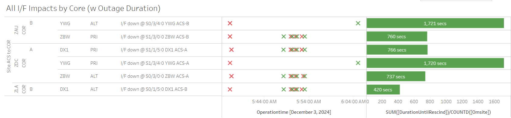
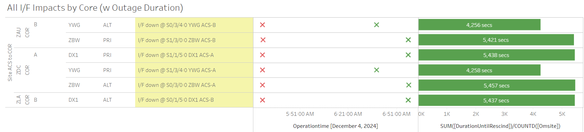

Weekly Highlights 20241120-20241127
11/6-11/23 - CM1 Brush Fires
-
11/6 19:03 - CM1 OFFLINE due to brush fires;
site
techicians evacuated...
The South Mountain Teleport personnel has been given the go ahead to start clean-up of racks and equipment and removal of debris. Electricity assessment is scheduled for tomorrow which will hopefully conclude with an RF assessment as well (waveguide, fiber, etc). SES will update if any delays in timeframe are encountered during the electricity assessment.shelter/11m antenna, spare shelter and omni antenna were unharmed by the fire
- 11/13 18:05 - CM1 Ring 1 ALT / Ring 2 PRI + YFB Ring 2 comms came up looped after fire
- 11/23 04:33 - CM1 GUS returns to Maintenance after extended outage due to wildfires; restored to Backup at 11/23 04:50
11/6 - YFB Comms Down for Both Rings...
- 10/30 22:23 - YFB Ring 1 comms momentarily restored to flapping until down hard at 10/30 22:50...
- 11/6 18:48 - YFB Ring 2 down hard due to CM1 brush fires... both rings to YFB down hard... OFFLINE
- 11/7 00:05 - YFB Ring 2 comms looped; loop cleared after 5 min but comm still down...
- 11/14 16:07 - YFB Ring 2 comms looped; loop cleared at 11/14 16:57 (~3000 seconds)
- 11/16 16:11 - YFB Ring 1 comms looped; loop cleared at 11/16 16:25 (~760 seconds total)
- 11/21 15:11 - YFB Ring 1 comms restored (~4 million seconds down) / Ring 2 still down hard...
11/20 - ZMP WRE-C Fault
- 11/20 03:30 - ZMP WRE-C Faulted with SEs 29,52,53,59; Control Powered and restored to Normal at 11/20 05:01
11/20 - SZ1 Intrusive Maintenance
- 11/20 07:04 - GUS Switchover - SM9 - DX1 to Primary / SZ1 to Backup for intrusive maintenance -- ref LIR 912344532
- 11/20 16:08 - SZ1 GUS to Maintenance; after maintenance completed, Control Powered and restored to Backup at 11/20 22:34
11/21 - MTP WRE Bias Err
- 11/21 18:56 - MTP WREs A and C received SE 729 WRE Bias Err and PID WRS Down
11/24 - NOC OAC-B Power Supply Fail
- 11/24 02:42 - NOC OAC-B Reset to address SE 240 Power Supply fail; lines cleared at 11/24 02:49 (~419 seconds)
11/24 - MMD L1/L2 Bias Trip
- 11/24 07:23 - MMD L1/L2 Bias Trip
11/25 - ZME WRE-C Fault
- 11/25 16:39 - ZME WRE-C Faulted with SEs 53 and 59; Control Power performed and restored to Normal at 11/25 18:01
11/25 - MSD L1/L2 Bias Trip
- 11/26 20:47 - MSD L1 / L2 Bias Trip
11/26 - ZKC WRE-A PCU Failed
- 11/26 06:17 - ZKC WRE-A OFFLINE due to failed PCU; PCU replaced and returned to Normal at 11/27 18:56 but still needs to be configured; changed to Maintenance until configuration can be performed after Thanksgiving Moratorium...
Various Comm Impacts
* Only captures major / long-term comm outages
Mexico Comms
- 11/20 15:34 - Mexico Ring 1 comms except Merida down hard; all lines cleared at 11/20 15:44 (~595 seconds)
- 11/23 15:24 - All MX Ring 1 comms down hard except MMD; lines cleared at 11/23 17:26 (~7795 seconds)
- 11/24 06:36 - MMD Ring 1 comms down hard; line cleared at 11/24 07:26 (~3025 seconds)
- 11/27 18:54 - MMD Ring 2 comms down hard; line cleared at 11/27 19:04 (~597 seconds)
ZSU Comms
- 11/20 01:28 - ZSU Ring 1 PRI / Ring 2 ALT comms flapping; last events cleared at 11/20 02:46 (~2820 seconds total)
- 11/21 18:39 - ZSU Ring 1 PRI / Ring 2 ALT comms flapping and looped; last event cleared at 11/21 23:03 (~4377 seconds total)
- 11/22 19:13 - ZSU Ring 1 PRI / Ring 2 ALT comms flapping and looped; last event cleared at 11/22 19:59 (~2243 seconds)
Other Sites
- 11/20 00:44 - OTZ Ring 1 ALT / Ring 2 ALT comms flapping; last events cleared at 11/20 11:00 (~5939 seconds total)
- 11/20 05:24 - ZNY Ring 1 ALT / Ring 2 PRI comms down hard; lines cleared at 11/20 06:41 (~4638 seconds)
- 11/20 12:48 - BRW Ring 1 PRI / Ring 2 ALT comms flapping; last events cleared at 11/20 17:59 (~2801 seconds total)
- 11/20 17:33 - BET Ring 1 PRI / Ring 2 ALT comms down hard; lines cleared at 11/20 17:50 (~957 seconds)
- 11/20 22:44 - BRW Ring 1 ALT / Ring 2 PRI comms down hard; lines cleared at 11/20 23:25 (~728 seconds)
- 11/21 04:27 - YQX Ring 1 comms down hard; line cleared at 11/21 08:09 (~13345 seconds)
- 11/21 20:23 - OTZ Ring 1 ALT / Ring 2 ALT comms down hard; lines cleared at 11/21 20:31 (~492 seconds)
- 11/24 05:25 - YQX Ring 1 comms flapping; last event cleared at 11/24 19:54 (~42501 seconds total)
- 11/27 05:28 - YQX Ring 1 PRI comms down hard; line cleared at 11/27 05:32 (~253 seconds)
- 11/27 05:29 - YYR Ring 2 comms down hard; line cleared at 11/27 05:33 (~278 seconds)
- 11/27 06:37 - BR1 Ring 1 PRI / ALT comms down for ~38 seconds
OTZ Ring 2 PRI / ALT
- 9/18 23:57 - OTZ Ring 1 ALT comms
connected after circuit validation
- Currently the wrong circuit (*508) is being used for OTZ Ring 2 ALT and *509 is connected on OTZ Ring 2 PRI
- FTI is troubleshooting the *509 circuit -- ref LIR 69611621
- Intial alarm light on DNX1U has cleared as of 10/1; further troubleshooting from FTI has not resolved issue...
- FTI has tested and re-terminated at ZLA. FTI needs a technician dispatched to OTZ to reset some equipment. Date has not been determined.
List of current offline WREs
List of current offline WREs -- ref WAAS Status Monitor
All Depot shipments to Mexico are halted until the customs process can be finalized
- ZKC WRE-A - 11/26/24-... - PCU-A failed; parts on order...
- MTP WRE-B - 11/18/24-... - Receiver inits failing...
- MMX WRE-A - 10/13/24-... - Freq Std failed -- ref LAD 879853824
- MMX WRE-C - 5/15-... - Processor failed and could not be restored
- MPR WRE-B - 5/3-... - Inits failing -- looks like a bad freq std; due to shipping issues, there is no spare Freq Std and no ETA to recover WRE-B...
5/11/23-11/20/24 - MX Ring 2 Satcom Upgrade
- 5/11/23 17:01 - MX Ring 2 SatCom upgrade begins; MX Ring 2 OFFLINE until upgrade troubleshooting is complete
All sites are currently connected through Tijuana with new cables; but still zero UDP data on Ring 2 -- no further actions to take at Tijuana
-
MMX / MMD are only sites with Ring 2 comm
-
MTP / MMD / MSD had comm issues to Tijuana prior to satcom failure...
-
WAAS Second Level assessing situation before further troubleshooting...

Major Events


Core I/F Status

Comm Events

Mexico Comm Status


Weekly Highlights 20241127-20241204
SSM-WAAS-064 - DFO2-R1 GUS Receiver Upgrade
- 12/2 08:00 - GUS Switchover - S15 - CM1 to Primary / BR1 to Backup in preparation for SSM-WAAS-064 Cutover start
- 12/3 16:04 - SSM-WAAS-064 - POC O&M to Maintenance for Upgrade to W7.412L; restored to Normal at 12/3 16:51
- 12/3 16:54 - SSM-WAAS-064 - NOC O&M to Maintenance for Upgrade to W7.412L; restored to Normal at 12/3 17:34
- 12/3 17:42 - SSM-WAAS-064 - BR1 GUS to Maintenance for Upgrade to W7.420L...
| Task(s) | DATES | EXPECTED DURATION |
|---|---|---|
| Cutover O&Ms – W7.412L | 12/03 – 12/03 | 1 day |
| Cutover BR1 – W7.425L | 12/03 – 12/06 | 3 days |
| Cutover BR2 – W7.425L | 12/10 – 12/12 | 3 days |
| Cutover AP1 – W7.425L | 12/17 – 12/19 | 3 days |
| New Year --- 2025 | ||
| Cutover CM1 – W7.425L | 1/14 – 1/16 | 3 days |
| Cutover DX1 – W7.425L | 1/28 – 1/30 | 3 days |
| Cutover SZ1 – W7.425L | 2/04 – 2/06 | 3 days |
| Cutover O&Ms – W7.425 | 2/07 – 2/07 | 1 day |
| 2 Week Post Cutover Monitoring Period | 2/07 – 2/21 | 14 days |
11/26-12/1 - ZKC WRE-A PCU Failed
- 11/26 06:17 - ZKC WRE-A OFFLINE due to failed PCU; PCU replaced and returned to Normal at 11/27 18:56 but still needs to be configured; changed to Maintenance until configuration can be performed after Thanksgiving Moratorium...
- 12/1 16:47 - ZKC WRE-A restored to Normal after PCU configuration -- ref LAD 902216424
11/29 - SE 831 Extreme Storm (Cancelled)
- 11/29 22:49 - All C&Vs alerted with SE 831 Extreme Storm Predicted 23:49; Storm cancelled at 11/29 22:56
12/2 - ZSU Subframe Reasonability Alarms
- 12/2 02:19 - ZSU WREs A,B,C alarmed with SE 728 Subframe Reasonability and PID WRS Down
- 12/3 02:27 - ZSU WREs A,B alarmed with SE 728 Subframe Reasonability and PID WRS Down
12/3 - ZME WRE-C Faults
- 12/3 01:20 - ZME WRE-C Faulted with SEs 52, 53, and 59; Control Powered and restored to Normal at 12/3 02:11
- 12/3 13:15 - ZME WRE-C Faulted with SEs 53 and 59; Freq Std alarmed with F3 - Ion Filament out of tolerance; Control Powered and restored to Normal at 16:02
- 12/4 21:11 - ZME WRE-C Faulted with SEs 53 and 59; recommended replace Freq Std...
Various Comm Impacts
* Only captures major / long-term comm outages
Mexico Comms
- 11/27 18:54 - MMD Ring 2 comms down hard; line cleared at 11/27 19:04 (~597 seconds)
- 12/2 16:04 - MPR Ring 1 Serial disconnected to test new Ethernet connection...
- 12/4 09:09 - MTP Ring 1 comms flapping until down hard at 12/4 14:19; line cleared at 12/4 20:59 (~58195 seconds total)
Other Sites
- 11/27 05:28 - YQX Ring 1 PRI comms down hard; line cleared at 11/27 05:32 (~253 seconds)
- 11/27 05:29 - YYR Ring 2 comms down hard; line cleared at 11/27 05:33 (~278 seconds)
- 11/27 06:37 - BR1 Ring 1 PRI / ALT comms down for ~38 seconds
- 12/2 12:21 - YWG Ring 1 PRI / Ring 2 ALT + ZNY Ring 1 PRI / Ring 2 ALT comms flapping; last events cleared at 12/2 12:45 (~40 seconds total)
- 12/3 05:36 - YWG / ZBW / DX1 comms impacted
- 12/3 05:48 - ZBW / DX1 lines came back up to flapping; last events cleared at 12/3 05:53 (~766 seconds total)
- 12/3 06:05 - YWG lines cleared (~1721 seconds)

- 12/4 05:27 - YWG / ZBW / DX1 comms impacted
- 12/4 06:38 - YWG lines cleared (~4258 seconds)
- 12/4 06:58 - ZBW / DX1 lines cleared (~5421 seconds)

OTZ Ring 2 PRI / ALT
- 9/18 23:57 - OTZ Ring 1 ALT comms
connected after circuit validation
- Currently the wrong circuit (*508) is being used for OTZ Ring 2 ALT and *509 is connected on OTZ Ring 2 PRI
- FTI is troubleshooting the *509 circuit -- ref LIR 69611621
- Intial alarm light on DNX1U has cleared as of 10/1; further troubleshooting from FTI has not resolved issue...
- FTI has tested and re-terminated at ZLA. FTI needs a technician dispatched to OTZ to reset some equipment. Date has not been determined.
List of current offline WREs
List of current offline WREs -- ref WAAS Status Monitor
All Depot shipments to Mexico are halted until the customs process can be finalized
- MTP WRE-B - 11/18/24-... - Receiver inits failing...
- MMX WRE-A - 10/13/24-... - Freq Std failed -- ref LAD 879853824
- MMX WRE-C - 5/15-... - Processor failed and could not be restored
- MPR WRE-B - 5/3-... - Inits failing -- looks like a bad freq std; due to shipping issues, there is no spare Freq Std and no ETA to recover WRE-B...
5/11/23-11/20/24 - MX Ring 2 Satcom Upgrade
- 5/11/23 17:01 - MX Ring 2 SatCom upgrade begins; MX Ring 2 OFFLINE until upgrade troubleshooting is complete
All sites are currently connected through Tijuana with new cables; but still large UDP data packets (WAAS Multicast) being dropped on Ring 2 -- no further actions to take at Tijuana
-
MMX / MMD are only sites with Ring 2 comm
-
MTP / MMD / MSD had comm issues to Tijuana prior to satcom failure...
-
WAAS Second Level assessing situation before further troubleshooting...

Major Events


Core I/F Status

Comm Events

Mexico Comm Status